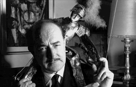

Lezione 19  La seconda guerrra mondiale
La seconda guerrra mondiale

Salvatore Quasimodo (Modica 1901- Napoli 1968), premio Nobel per la letteratura nel 1959, scrisse Alle fronde dei salici nel 1945, ispirandosi al passo biblico in cui gli ebrei appendono le cetre ai rami dei salici perchè prigionieri in terra straniera. La lirica apre la raccolta Giorno dopo giorno, pubblicata nel 1947.
E come potevamo noi cantare
Con il piede straniero sopra il cuore
Fra i morti abbandonati nelle piazze
Sull’erba dura di ghiaccio, al lamento
d’agnello dei fanciulli, all’urlo nero
della madre che andava incontro al figlio
crocifisso sul palo del telegrafo?
Alle fronde dei salici, per voto,
anche le nostre cetre erano appese,
oscillavano lievi al triste vento.